Le indagini sono state condotte in regime di concessione, in continuità con le prime ricerche estensive effettuate nell’estate del 2013. Lo scavo è stato eseguito dal 4 al 22 luglio 2016. Allo scavo hanno partecipato, sotto la direzione di chi scrive, ricercatori e studenti dell’università di Bologna: la dott.ssa Federica Galazzi (Dottorato di Ricerca) e il Dott. Francesco Belfiori (Assegnista di Ricerca) hanno coordinato le attività di laboratorio e di scavo. Gli studenti che hanno partecipato allo scavo sono i seguenti: Samuele Grazzani (Scuola di Specializzazione: 749374), Alessandra Badolato (Laurea Triennale - Ravenna: 740497), Parodi Camilla (Laurea Triennale - Ravenna: 741182), Bosso Roberto (Laurea Triennale - Ravenna: 775823).
Le spese di vitto sono state sostenute da Consorzio Città Romana di Suasa, quelle di alloggio dal Comune di Corinaldo, i mezzi meccanici per lo splateamento sono stati forniti dall’Ufficio Tecnico del medesimo Comune.
Le indagini si sono focalizzate nel settore SO rispetto alla grande vasca E, ai fini di definire al meglio l’estensione e i limiti dell’insediamento di età romana, già indagato in larga parte per quanto riguarda il settore nord-orientale (per il quale si rimanda alle relazioni delle campagne di scavo 2013 e 2014, già depositate presso questa Soprintendenza).
Il settore sud-occidentale
L’indagine del 2016 è stata concentrata, come detto, nel settore SO rispetto al Vano E ed è partita dalla quota del piano pavimentale in fase con la grande vasca (US 33), realizzata nell’ultima fase di vita dell’insediamento. L’indagine in profondità al di sotto di questo piano pavimentale ha confermato la presenza di almeno due fasi strutturali più antiche rispetto alla costruzione del Vano E.
La più antica (FASE I: III-II sec. a.C.) è testimoniata da un muro databile a un orizzonte repubblicano come suggerito dall’analisi preliminare del materiale ceramico e dalla tecnica edilizia, che permette di mettere in fase tale muratura con quelle più antiche individuate nel settore NO nel corso delle precedenti campagne. Si tratta di un muro orientato NO-SE, costruito con una fondazione di ciottoli fluviali di medie e grandi dimensioni (US 116) allettati con argilla entro un cavo (US 141) che incide la stratificazione sterile consistente in limi di origine fluviale che costituivano il piano d’uso relativo a questa fase (US 118). L’alzato del muro doveva essere in mattoni di argilla cruda, messi in opera sopra una zoccolatura di tegole, parzialmente conservata (US 111), secondo uno schema ormai noto dell’edilizia di età repubblicana tipica del territorio marchigiano. Con ogni probabilità questo muro doveva delimitare una prima area cortilizia contempo fungere da limite dell’insediamento. Vistose tracce d’incendio rinvenute in più punti dell’area di scavo (US 112)permettono di ipotizzare che il muro di chiusura dell’insediamento vada incontro a distruzione e a crollo già nel corso dell’età repubblicana.
A causa di questo evento si assiste a una ricostruzione, all’insegna del riassetto e dell’ampliamento, del settore indagato (FASE II: II-I sec. a.C.). Il muro della fase precedente viene dunque sostituito da una nuova struttura (US 113), che ne mantiene l’orientamento. A questo muro ne corrisponde un secondo a SO (US 123). In relazione a queste murature è stato anche identificato un nuovo piano d’uso(US 117), un battuto di ghiaino. I muri sono conservati in fondazione e parzialmente in alzato: sono costruiti utilizzando tegole intere, solo occasionalmente frammentate in pezzame di grandi dimensioni, messe in opera con abbondante malta di calce che utilizza ghiaia di granulometria medio-piccola come inerte. Entrambe le murature sono state indagate per tutta la larghezza dell’area di scavo e insieme vanno a costituire le strutture portanti dell’ala SO del nuovo edificio, ora non più limitata a un unico diaframma di chiusura, ma probabilmente strutturata in una serie di ambienti che dovevano affacciarsi sull’area scoperta centrale (non ancora occupata da Vano E).
La situazione architettonica e planimetrica così definita conosce un nuovo cambiamento che prelude all’assetto definitivo dell’edificio di età romana (FASE III): in corrispondenza della porzione settentrionale di US 113 e di US 123, è stato scavato uno strato di macerie dalla potenza di 0,30 – 0,50 m (US 120) da ricondurre alla distruzione parziale delle medesime strutture. Tale strato oblitera anche il piano d’uso US 117. È probabile che la distruzione dei due muri sia frutto di atti intenzionali, poiché sembra interessare selettivamente solo la porzione NO dei due muri, mentre la porzione SE resta in opera e in funzione: ciò è testimoniato dalla costruzione di due murature (US 114, 115 con i rispettivi tagli di fondazione US 139, 140), le quali fondano a una quota sensibilmente superiore rispetto a 113 e a 123 alle quali si appoggiano, andando a definire due vani certamente muniti di copertura (VANI L, I), come testimoniato dalla presenza dei relativi crolli ascrivibili alle fasi di abbandono del sito. Lo spazio a NO di US 114 invece (VANO M) sembra in questa fase costituire piuttosto un ampliamento dell’area cortilizia centrale, se non una vero e proprio passaggio tra questo e l’esterno dell’insediamento, il cui limite sin dalla fase precedente è costituito dal muro US 123.
Questi elementi ci orientano a interpretare la fase appena descritta come immediatamente precedente e funzionale alla costruzione del Vano E (FASE IV: fine I sec. a.C. – I sec- d.C.), al centro della corte scoperta1. Funzionale e in fase alla vasca è la costruzione di una canaletta (taglio US 122; copertura in mattoni manubriati US 121) che doveva raccogliere le acque in eccesso della cisterna, espulse tramite un tubulo fittile murato nel lato SO del Vano E. Tale canaletta convogliava le acque in eccesso in direzione SO, facendole confluire probabilmente in quello che potrebbe essere un canale o un paleoalveo del Cesano attivo in età romana (US 134). Nel suo percorso, la canaletta intercetta le US 113 e 123, a conferma che il vano M costituisce in questa fase un’area scoperta o un ampliamento del cortile, ora ripavimentato con un nuovo riporto antropico di ghiaia (US 33), che raggiunge la quota del nuovo e definitivo piano d’uso del cortile2. A questa fase è forse ascrivibile anche l’unica struttura individuata a NO del Vano E, l’US 110 che viene fondata in quota con il nuovo piano pavimentale e impiega, come nel caso delle murature della vasca, frammenti di laterizi manubriati in paramento.
Dopo questa fase, le evidenze restituite dalla presente campagna di scavo sono riferibili alle fasi di abbandono, distruzione e ruralizzazione del sito da collocarsi a partire dall’età tardo antica (FASE V): defunzionalizzazione del Vano E; defunzionalizzaizone della canaletta (US 148); crolli delle coperture e dei tetti in corrispondenza dei Vani L e M (US 124, 125); spogliazioni delle strutture murarie individuate a SE del Vano E ma non scavate (US 131, 132), che permettono di ipotizzare anche per questo lato del cortile una strutturazione planimetrica e architettonica analoga a quelle degli altri settori indagati. Infine in età moderna, se non contemporanea, è possibile ascrivere l’apertura di due grandi fosse sub parallele (viti o canali: tagli US 128, 130 e rispettivi riempimenti US 129, 130) che, attraversando trasversalmente tutta l’area oggetto di indagine, hanno significativamente inciso la stratificazione antica compromettendo notevolmente la conservazione delle strutture e la lettura della colonna stratigrafica in più punti.
A termine dell’indagine stratigrafica, si è provvisto alla copertura delle strutture con tessuto non tessuto l’ultimo giorno di scavo, mentre nei giorni successivi l’area è stata completamente rinterrata grazie all’assistenza della Proprietà della cava di ghiaia (Antonio Mariotti).
- 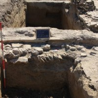Fondazione in ciottoli US 116
- 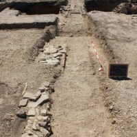US 111 (a sinistra) alla quale si addossa nella FASE II US 113
- 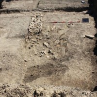Il Vano con il muro US 115 e il crollo 124
- 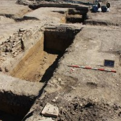Il Vano L delimitato da US 114, 115, 123, 113
- 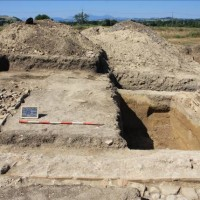Vano L
- 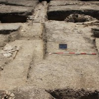Vano M con il nuovo piano di ghiaia US 33 che oblitera anche le strutture precedenti (US 113 e 111)
- 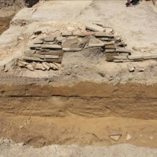Particolare di US 114 fondata sopra lo strato di incendio US 112 e i limi sterili US 118
- 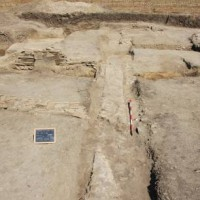Vani I, L, M
- 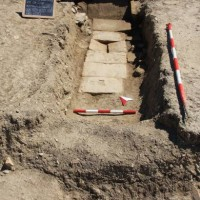Canaletta US 121,122 in corrispondenza del troppopieno della Vano E
- 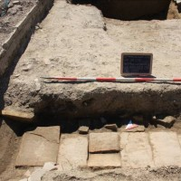Canaletta fondata in US 120 e sopra il nuovo piano della vasca US 33
- 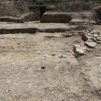La muratura US 110 a NO del Vano E
{kind=link}
{kind=link}
{kind=link}
{kind=link}
{kind=link}
{kind=link}
{kind=link}
{kind=link}
{kind=link}
{kind=link}
{kind=link}